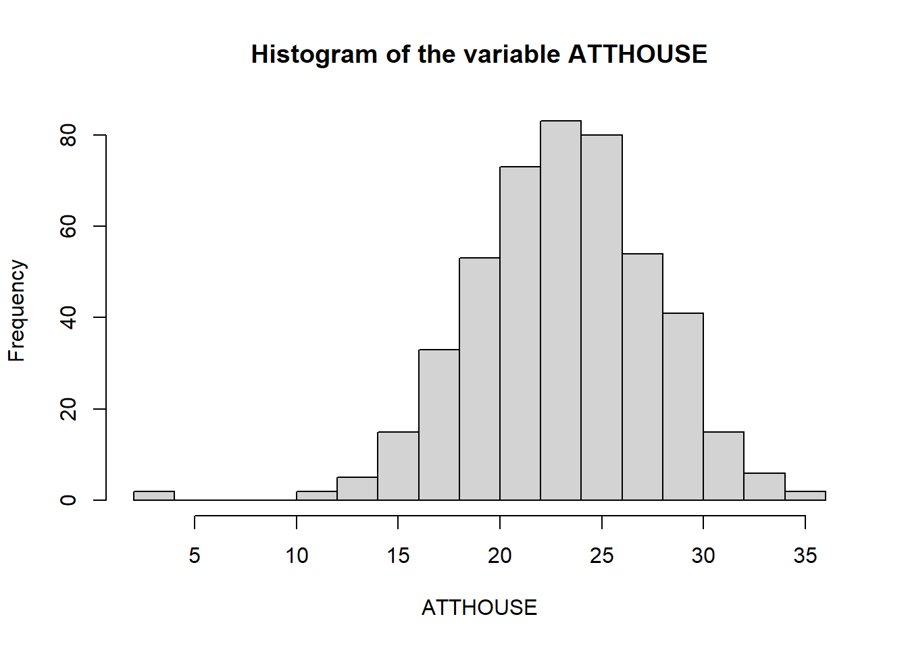
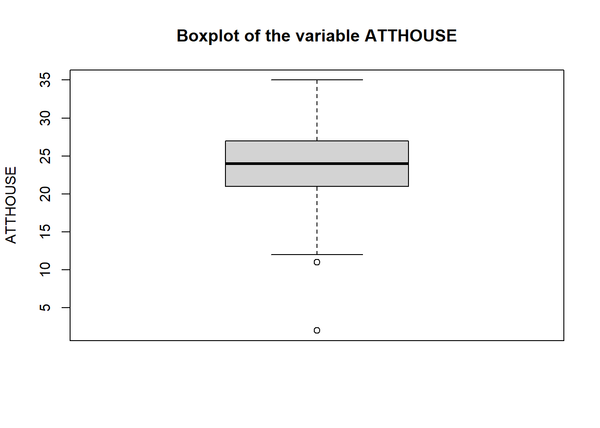
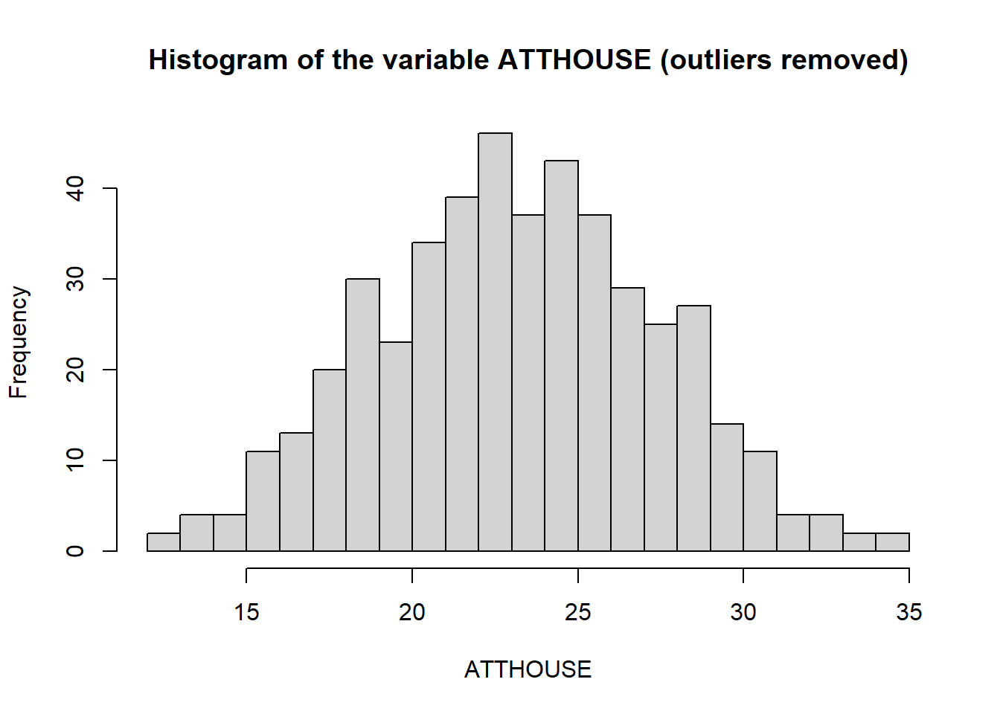
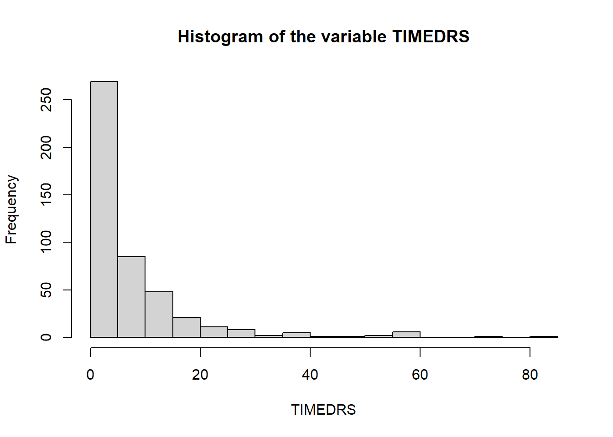
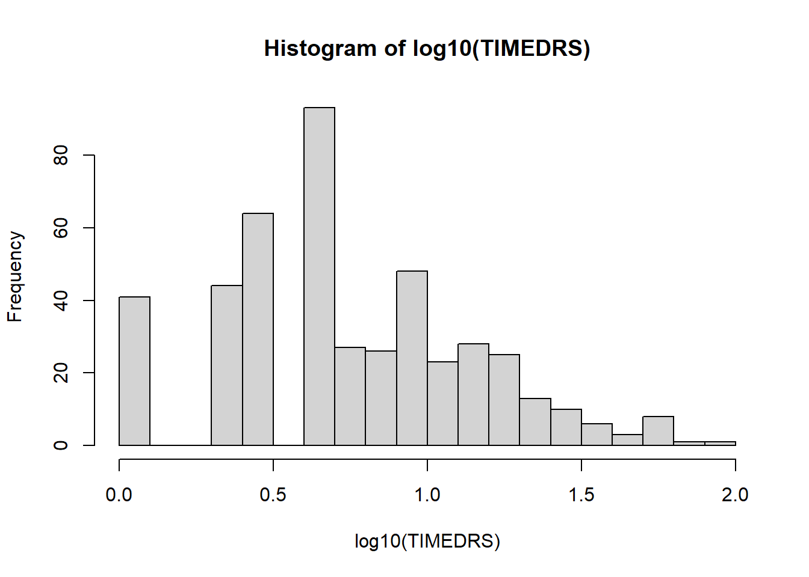
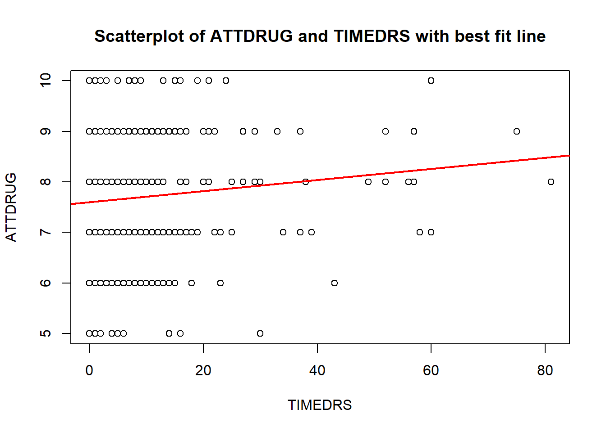
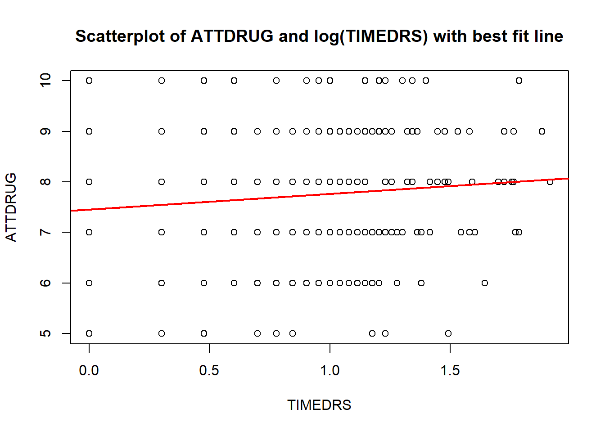

mydata <- read.csv("HouseholdData.csv")PS71020_Unit2_Lab
Screening and Cleaning Data
Learning Outcomes:
1 - Use RStudio to screen data for normality and univariate outliers.
2 - Remove unwanted cases from analysis in RStudio.
3 - Use RStudio to transform a variable and create new variables.
4 - Use RStudio to produce a scatterplot to inspect visually the linearity and homoscedasticity of the relationship between two variables.
5 - Use RStudio to detect multivariate outliers.
Materials Used:
We will use the package psych, this are already installed on the RStudio Server but if you are working on your own Laptop you may need to install it. Instructions will be included later on how to load the packages.
NoteSome general notes about the weekly labs
You should go through the worksheet during the lab and try to complete as much of it during the lab as you can. You can work on the sheet individually or in small groups during the lab. Try to answer the lab worksheet questions in your own words however. If you are unable to finish the worksheet during the class, try to finish it outside class time. Try to attempt the answer before using the ‘Show Answer’ button.
As you go through the sheet, copy the relevant lines of code to your own analysis script.
A complete model answers script will be available on the VLE page from Fridays after the labs so you can check your own answers.
If you have any queries during the class, please feel free to ask your lab tutors. If your question relates specifically to the lecture content or the homework sheets, please contact Peter Holland by email or use the forum on the VLE page.*
THE DATA SET
This dataset is one of the datasets provided with Tabachnick and Fidell, with some minor modifications. It contains information on the marital status, ethnicity, and employment status of over 450 women (sorry - the data are arguably very dated!), along with data on income and numbers of visits to health professionals, plus attitude ratings regarding housework and medication. The variables are:
TIMEDRS (number of visits to the doctors);
ATTDRUG (attitudes to medication);
ATTHOUSE (attitudes to housework);
INCOME (a coding for income);
EMPLMNT (coded 1=work at home, 0=work in an office);
MSTATUS (1=married, 2=unmarried); and
ETHNICITY (1=caucasian, 2=non-caucasian).
CREATE A NEW PROJECT
Just as we did last week we are going to start by creating a new project for this week’s lab. Download the data from the VLE (In the Week 2 Lab Materials section) and then copy it in the folder you created your project in. You can also find a direct download link for the data here: Github Link.
If you are working on the RStudio Server, then you will need to download the file to your computer and then upload it to the correct folder on the server.
Also create a new script in this folder so you can copy the lines of code needed to run this analysis yourself using just that script.
SECTION A. LOADING THE DATA
As we have done before we will use the read.csv() function to read the data and store it as a dataframe in R, here I have called this dataframe mydata, feel free to call it whatever you like but remember that you will always need to use this variable name to refer to it throughout your script.
A good first step is to examine the first few rows of the data set using the head() function.
head(mydata) ID TIMEDRS ATTDRUG ATTHOUSE INCOME EMPLMNT MSTATUS ETHNICITY
1 1 1 8 27 5 1 2 1
2 2 3 7 20 6 0 2 1
3 3 0 8 23 3 0 2 1
4 4 13 9 28 8 1 2 1
5 5 15 7 24 1 1 2 1
6 6 3 8 25 4 0 2 1In this data set each row is the data about one participant and each column is the different things we know about that participant. What is this format of data known as and what is the other common format of data in R?
This data is wide format data, the alternative is tall format.
We have some categorical variables in this data set, so we need to tell R that these are and what the different codes mean. Look at the explanation of the data above, which variables should be changed to be categorical?
EMPLMNT, MSTATUS, and ETHNICITY definitely. INCOME is less clear from the description, it could be an ordinal variable but here we will leave it as it is.
We use the factor() function to classify the categorical variables correctly, we the use the levels = input to tell R what numeric codes exist and the labels = input to give them text labels. Remember that the c() function is what we use to stick things together (called concatenation) into a vector.
mydata$EMPLMNT <- factor(mydata$EMPLMNT, levels = c(0,1), labels = c("Office","Home"))
mydata$MSTATUS <- factor(mydata$MSTATUS, levels = c(1,2), labels = c("Married","Unmarried"))
mydata$ETHNICITY <- factor(mydata$ETHNICITY, levels = c(1,2), labels = c("Caucasian","Non-caucasian"))We can now use the summary() function to get some basic descriptive statistics of the numeric variables and counts of the categorical variables.
summary(mydata) ID TIMEDRS ATTDRUG ATTHOUSE
Min. : 1.0 Min. : 0.000 Min. : 5.000 Min. : 2.00
1st Qu.:137.0 1st Qu.: 2.000 1st Qu.: 7.000 1st Qu.:21.00
Median :314.0 Median : 4.000 Median : 8.000 Median :24.00
Mean :317.4 Mean : 7.901 Mean : 7.686 Mean :23.54
3rd Qu.:483.0 3rd Qu.:10.000 3rd Qu.: 9.000 3rd Qu.:27.00
Max. :758.0 Max. :81.000 Max. :10.000 Max. :35.00
NA's :1
INCOME EMPLMNT MSTATUS ETHNICITY
Min. : 1.00 Office:246 Married :103 Caucasian :424
1st Qu.: 2.50 Home :219 Unmarried:362 Non-caucasian: 41
Median : 4.00
Mean : 4.21
3rd Qu.: 6.00
Max. :10.00
NA's :26 SECTION B. UNIVARIATE DATA SCREENING
Now we will examine the variable ATTHOUSE, in a full data screening we would look at all the variables but to save time in class we will only look at a couple. However, once you have the code to do this for one variable you can easily change to look at another variable.
The first thing we are going to do is to create a couple of different plots, a boxplot and a histogram. The breaks = input to the hist() function tells R how many bins to use when creating the histogram, you can try using different values to change the resolution of the x axis.
hist(mydata$ATTHOUSE, breaks = 20, main = "Histogram of the variable ATTHOUSE", xlab = "ATTHOUSE")
bp <- boxplot(mydata$ATTHOUSE, main = "Boxplot of the variable ATTHOUSE", ylab = "ATTHOUSE")
What do the histogram and boxplot indicate?
There appear to be one or more outliers with very low values of atthouse.
However, from these plots it isn’t exactly clear how many outliers we have, it could be the case that there are multiple outliers with the same values and the basic boxplot is just overlaying them visually. Similarly the y axis scale on the histogram is not detailed enough for us to see if the count is 1 or 2.
We can get more information about outliers in a boxplot by assigning the ouput of the boxplot() function to a variable and then examining the $out element of the output. You can see in the code above that I have already done this, so now we can just get R to print this for us.
bp$out[1] 2 2 11This tells us that we have three outliers, two with a value of 2 and another one with a value of 11.
We don’t just want to delete these values from our data set, for reproducibility we want to keep our data set complete and somehow flag or indicate which bits of data are outliers. This means we can then choose when to include these cases or when not to in different analyses.
There are multiple approaches that can accomplish this, here we will create a new variable in mydata called mydata$atthouse_out that is FALSE if the data is not an outlier and TRUE if that data point is an outlier. This type of variable, with only TRUE or FALSE is called a logical value in R. You can see another example of this here in the pre-sessional materials Tutorial 3.
From the boxplot output we can see that anything with a value of 11 or less counts as an outlier using the boxplot rule. So if I used the code mydata$ATTHOUSE<12 it would return TRUE for any value of atthouse less than 12 or false for any value of 12 or more. We can also use the summary() function here to get a count of TRUE and FALSE.
mydata$ATTHOUSE<12 [1] FALSE FALSE FALSE FALSE FALSE FALSE FALSE FALSE FALSE FALSE FALSE FALSE
[13] FALSE FALSE FALSE FALSE FALSE FALSE FALSE FALSE FALSE FALSE FALSE FALSE
[25] FALSE FALSE FALSE FALSE FALSE FALSE FALSE FALSE FALSE FALSE FALSE FALSE
[37] FALSE FALSE FALSE FALSE FALSE FALSE FALSE FALSE FALSE FALSE FALSE FALSE
[49] FALSE FALSE FALSE FALSE FALSE FALSE FALSE FALSE FALSE FALSE FALSE FALSE
[61] FALSE FALSE FALSE FALSE FALSE FALSE FALSE FALSE FALSE FALSE FALSE FALSE
[73] FALSE FALSE FALSE FALSE FALSE FALSE FALSE FALSE FALSE FALSE FALSE FALSE
[85] FALSE FALSE FALSE FALSE FALSE FALSE FALSE FALSE FALSE FALSE FALSE FALSE
[97] FALSE FALSE FALSE FALSE FALSE FALSE FALSE FALSE FALSE FALSE FALSE FALSE
[109] FALSE FALSE FALSE FALSE FALSE FALSE FALSE FALSE FALSE FALSE FALSE FALSE
[121] FALSE FALSE FALSE FALSE FALSE FALSE FALSE FALSE FALSE FALSE FALSE FALSE
[133] FALSE FALSE FALSE FALSE FALSE FALSE FALSE FALSE FALSE FALSE FALSE FALSE
[145] FALSE FALSE FALSE FALSE FALSE FALSE FALSE FALSE FALSE FALSE FALSE FALSE
[157] FALSE FALSE FALSE FALSE FALSE FALSE FALSE FALSE FALSE FALSE FALSE FALSE
[169] FALSE FALSE FALSE FALSE FALSE FALSE FALSE FALSE FALSE FALSE FALSE FALSE
[181] FALSE FALSE FALSE FALSE FALSE FALSE FALSE FALSE FALSE FALSE FALSE FALSE
[193] FALSE FALSE FALSE FALSE FALSE FALSE FALSE FALSE FALSE FALSE FALSE FALSE
[205] FALSE FALSE FALSE FALSE FALSE FALSE FALSE FALSE FALSE FALSE FALSE FALSE
[217] FALSE FALSE FALSE FALSE FALSE FALSE FALSE FALSE FALSE FALSE FALSE FALSE
[229] FALSE FALSE FALSE FALSE FALSE FALSE FALSE FALSE FALSE FALSE FALSE FALSE
[241] FALSE FALSE FALSE FALSE FALSE FALSE FALSE FALSE FALSE FALSE FALSE FALSE
[253] NA FALSE FALSE FALSE FALSE FALSE FALSE FALSE TRUE FALSE FALSE FALSE
[265] FALSE FALSE FALSE FALSE FALSE FALSE FALSE FALSE FALSE FALSE FALSE FALSE
[277] FALSE FALSE FALSE FALSE FALSE FALSE FALSE FALSE FALSE FALSE FALSE FALSE
[289] FALSE FALSE FALSE FALSE FALSE FALSE FALSE FALSE FALSE FALSE TRUE FALSE
[301] FALSE FALSE FALSE FALSE FALSE FALSE FALSE FALSE FALSE FALSE FALSE FALSE
[313] FALSE FALSE FALSE FALSE FALSE FALSE FALSE FALSE FALSE FALSE FALSE FALSE
[325] FALSE FALSE FALSE FALSE FALSE FALSE FALSE FALSE FALSE FALSE FALSE FALSE
[337] FALSE FALSE FALSE FALSE FALSE FALSE FALSE FALSE FALSE FALSE FALSE FALSE
[349] FALSE FALSE FALSE FALSE FALSE FALSE FALSE FALSE FALSE FALSE FALSE FALSE
[361] FALSE FALSE FALSE FALSE FALSE FALSE FALSE FALSE FALSE FALSE FALSE FALSE
[373] FALSE FALSE FALSE FALSE FALSE FALSE FALSE FALSE FALSE FALSE FALSE FALSE
[385] FALSE FALSE FALSE FALSE FALSE FALSE FALSE FALSE FALSE FALSE FALSE FALSE
[397] FALSE FALSE FALSE FALSE FALSE FALSE FALSE FALSE FALSE FALSE FALSE FALSE
[409] FALSE FALSE FALSE FALSE FALSE FALSE FALSE FALSE FALSE FALSE FALSE FALSE
[421] FALSE FALSE FALSE FALSE FALSE FALSE FALSE FALSE FALSE FALSE FALSE FALSE
[433] FALSE FALSE TRUE FALSE FALSE FALSE FALSE FALSE FALSE FALSE FALSE FALSE
[445] FALSE FALSE FALSE FALSE FALSE FALSE FALSE FALSE FALSE FALSE FALSE FALSE
[457] FALSE FALSE FALSE FALSE FALSE FALSE FALSE FALSE FALSEsummary(mydata$ATTHOUSE<12) Mode FALSE TRUE NA's
logical 461 3 1 What else do you notice about the output of the summary function?
There is also a NA in our data set indicating a piece of missing data. We do more on removing missing data in this week’s homework. The plotting functions we have used so far just ignore missing data.
However, so far we have just asked R to print to the values and summarise them. To actually keep them we need to create a new variable in our dataset. We can create a new variable in our dataframe that contains these values like this:
mydata$atthouse_out <- mydata$ATTHOUSE<12We can now extract from the mydata dataframe only the clean data and call this new dataframe something else. We will use a very useful function to do this called subset(). The ‘subset()’ function takes rows from a dataframe where the second input argument is TRUE.
subset(mydata,mydata$atthouse_out) ID TIMEDRS ATTDRUG ATTHOUSE INCOME EMPLMNT MSTATUS ETHNICITY
261 346 2 8 2 1 Office Married Caucasian
299 407 2 8 2 4 Office Married Caucasian
435 584 0 8 11 NA Home Unmarried Non-caucasian
atthouse_out
261 TRUE
299 TRUE
435 TRUEWhat bits of mydata did using subset() give us above?
Because our outliers are marked as TRUE, the code above only returns the outliers. This is good for checking what we have done, but not really what we want to use for cleaning our data.
Using the ! symbol instead tells R to only take rows of data from mydata when mydata$atthouse_out is not TRUE. This is what we want so now our new dataframe called cleanData only contains the data without the outliers
cleanData <- subset(mydata,!mydata$atthouse_out)We can check the number of rows of our original data and compare that to the new cleanData using a function called nrow(). You can also do this visually using the Environment panel but it is good practice to do this with code.
nrow(mydata)[1] 465nrow(cleanData)[1] 461What do you notice about how many rows have been removed?
We have removed four rows, but we only had 3 outliers. Subset() has the added advantage of also removing the row with NA from our data set as it is strictly looking for rows with a TRUE value.
If we now re-plot a histogram of our ATTHOUSE data in the clean data set we can see we have removed the outliers:
hist(cleanData$ATTHOUSE, breaks = 20, main = "Histogram of the variable ATTHOUSE (outliers removed)", xlab = "ATTHOUSE")
SECTION C. ASSESSING NORMALITY
In the plot above the ATTHOUSE variable appears reasonably normally distributed from the histogram. We can assess the skewness and kurtosis using R, however, base R does not contain a function for this so we will use one called describe() from the psych package. First we load the package using the library() function.
library(psych)
describe(cleanData$ATTHOUSE) vars n mean sd median trimmed mad min max range skew kurtosis se
X1 1 461 23.66 4.23 24 23.67 4.45 12 35 23 0 -0.35 0.2What value for skewness and kurtosis does a normal distribution have? Do you have any concerns about the normality of the atthouse variable?
A normally distributed variable has skewness and kurtosis of 0. Here atthouse seems close to normal, with a skew of 0 and a slightly negative kurtosis but well below the threshold of 2.
Now we will examine the TIMEDRS variable, still using our clean data set. First plot a histogram of this variable, see if you can write the code yourself to create the plot shown below:

What does the histogram show?
A positive skew. (A positive skew is one where the tail is on the right hand, i.e. positive, side of the graph.)
The code used to create it was: hist(cleanData$TIMEDRS, breaks = 20, main = "Histogram of the variable TIMEDRS", xlab = "TIMEDRS")
Calculate the skewness and kurtosis of the TIMEDRS variable, what are they?
Skewness = 3.21 Kurtosis = 12.77
The code used to calculate it was: describe(cleanData$TIMEDRS)
SECTION D. TRANSFORMING A VARIABLE
We can try to reduce the skew of timedrs by using a transformation. There are many transformations avaiable to use that help deal with different types of skew (you can find these online on in the textbook). Here we are going to use a log transformation.
Can you explain why a log transformation in particular should work with a variable such as timedrs?
The log transformation works on powers of 10 and makes numbers smaller. But the larger the number is, the greater the reduction. Therefore, it draws the long tail closer in.
The log formula (to base 10) is as follows: if a = 10b, then log10a = b. For example, 100 = 102, hence log10100 = 2
For example: 1 becomes 0 10 becomes 1 100 becomes 2 1000 becomes 3
R has a function to calculate this for us called log10(). However, we have to make one modification before we can just apply this to our variable, that is we have to +1 to all the values of our variable before taking the log. This is becuase you cannot have a log of 0, or of a negative number. The variable timedrs has some values of 0 and this would yield negative numbers.
So we can create a new variable in our cleanData dataframe with the log10(cleanData$TIMEDRS+1). And the plot a histogram of it.
cleanData$TIMEDRS_log <- log10(cleanData$TIMEDRS+1)
hist(cleanData$TIMEDRS_log, breaks = 20, main = "Histogram of log10(TIMEDRS)", xlab = "log10(TIMEDRS)")
This does not look perfectly normal but is much closer than before.
Calculate the skewness and kurtosis of the TIMEDRS_log variable, what are they?
Skewness = 0.22 Kurtosis = -0.2
The code used to calculate it was: describe(cleanData$TIMEDRS_log)
SECTION E. CHECKING LINEARITY AND HOMOSCEDASTICITY
Next, we can examine the relationship between ATTDRUG and TIMEDRS using a scatterplot.
plot(cleanData$TIMEDRS,cleanData$ATTDRUG, xlab = "TIMEDRS", ylab = "ATTDRUG", main = "Scatterplot of ATTDRUG and TIMEDRS with best fit line")
abline(lm(ATTDRUG ~ TIMEDRS,cleanData), col = "red", lwd = 2) #plot the linear model as a straight line
Above the abline() function was used to plot a line of best fit through the data, you can see a fuller description of how it was used in the pre-sessional materials and we will come back to this when discussing regression Tutorial 5.
Do you think the relationship looks linear? Does it look homoscedastic?
It is often hard to tell with real-life messy data, but in this case it does not look particularly linear or homoscedastic.
Write the code to create the scatterplot shown below using the log-transformed variable (TIMEDRS_log). Do you think the relationship looks linear now? Does it look homoscedastic? now
It does look better than before but you are entitled to be somewhat sceptical as to whether this graph shows any kind of relationship, let alone a linear one. The best fit line is almost horizontal and the r2 is only .01. (A Pearson’s correlation test shows that this relationship is still significant, r=.11, p=.014; small correlations can of course be significant with large samples). We will discuss this in week3 or see Tutorial 5.

Pearson's product-moment correlation
data: cleanData$TIMEDRS_log and cleanData$ATTDRUG
t = 2.3867, df = 459, p-value = 0.01741
alternative hypothesis: true correlation is not equal to 0
95 percent confidence interval:
0.01958582 0.20002110
sample estimates:
cor
0.1107157 SECTION F. IDENTIFYING MULTIVARIATE OUTLIERS
Next we will check the data for multivariate outliers amongst a set of 5 variables (TIMEDRS_LOG, ATTDRUG, ATTHOUSE, MSTATUS, and ETHNICITY). Notice that we are going to remove multivariate outliers after first removing univariate outliers as we are using our cleanData.
We want to create a simpler data set with only these columns of data in it. Earlier we used subset() to select certain rows. Here we are going to use it again in a slightly different way:
df <- subset(cleanData, select = c("ATTDRUG","TIMEDRS_log","ATTHOUSE","MSTATUS","ETHNICITY"))
summary(df) ATTDRUG TIMEDRS_log ATTHOUSE MSTATUS
Min. : 5.000 Min. :0.0000 Min. :12.00 Married :100
1st Qu.: 7.000 1st Qu.:0.4771 1st Qu.:21.00 Unmarried:361
Median : 8.000 Median :0.6990 Median :24.00
Mean : 7.688 Mean :0.7446 Mean :23.66
3rd Qu.: 9.000 3rd Qu.:1.0414 3rd Qu.:27.00
Max. :10.000 Max. :1.9138 Max. :35.00
ETHNICITY
Caucasian :422
Non-caucasian: 39
By using the select = input argument to subset() we can ask it to return only certain columns. You can also combine both of these at once to get only certain rows and certain columns.
However, the function we will use to calculate the mahalanobis distance (mahalanobis()) does not work with categorical variables. Therefore, for this analysis we are going to convert these back into numeric variables. In the same way we can use factor() to convert numeric data into factors, we can use the function as.numeric() to convert back to numeric data.
df$MSTATUS <- as.numeric(df$MSTATUS)
df$ETHNICITY <- as.numeric(df$ETHNICITY)
summary(df) ATTDRUG TIMEDRS_log ATTHOUSE MSTATUS
Min. : 5.000 Min. :0.0000 Min. :12.00 Min. :1.000
1st Qu.: 7.000 1st Qu.:0.4771 1st Qu.:21.00 1st Qu.:2.000
Median : 8.000 Median :0.6990 Median :24.00 Median :2.000
Mean : 7.688 Mean :0.7446 Mean :23.66 Mean :1.783
3rd Qu.: 9.000 3rd Qu.:1.0414 3rd Qu.:27.00 3rd Qu.:2.000
Max. :10.000 Max. :1.9138 Max. :35.00 Max. :2.000
ETHNICITY
Min. :1.000
1st Qu.:1.000
Median :1.000
Mean :1.085
3rd Qu.:1.000
Max. :2.000 We can now calculate the mahalanobis distance.
# degrees of freedom (number of variables)
dfs <- ncol(df)
# compute MD values
mdv <- mahalanobis(df, colMeans(df), cov(df))
# compute p-values for MD
mdp<-pchisq(mdv, df=dfs, lower.tail=FALSE)We can now use a little bit of code to make this output more easily readable, do not worry if this looks complex now there is no need to fully understand it, however, if you are feeling more confident you can try and work through line by line to understand.
# alpha-level (usually .001)
alpha <- .001
# combine MD and p-values in a single matrix
md <- data.frame(mdv, mdp)
# prints rows, MD values, p-values of multivariate outliers (returns <0 rows> if no outliers
# are present)
mdout <- md[md[,2]<alpha,]
mdout mdv mdp
117 22.24757 0.0004697883
193 20.72929 0.0009112059# number of multivariate outliers (returns 0 if no outliers are present)
nummdout <- nrow(mdout)
nummdout[1] 2How many multivariate outliers are there and what are their rows and Mahalanobis distance values?
Two (MD: 22.16 and 20.74; rows: 117 and 193).